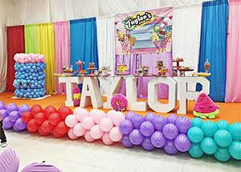
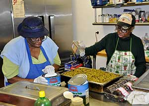

Events at HCEC
Community & Local Events
We are proud to host a wide variety of community events, which have featured Brooklyn Borough President Eric Adams, 77th Police Precinct community meetings & Governor Cuomo overseeing holiday gifts for underprivileged youth. Check our Facebook page out for upcoming dates!

Private Parties & Corporate Functions
HCEC has hosted a wide variety of successful parties, including birthdays, baby showers, business seminars, non-profit raffles, and many more. Check out our Instagram page for more ideas on your next gathering!

Food Pantry
Hope City serves breakfast on Saturday mornings, and lunch every Tuesday, Thursday and Friday. On Friday, twice a month, food is distributed to the community from our client choice food pantry. If you're interested in learning more about volunteering on Friday mornings, please call (718) 857-5698 for more information!
We make our kitchen and facilities available to rent for community organizations and other private events. Please contact us for more information.